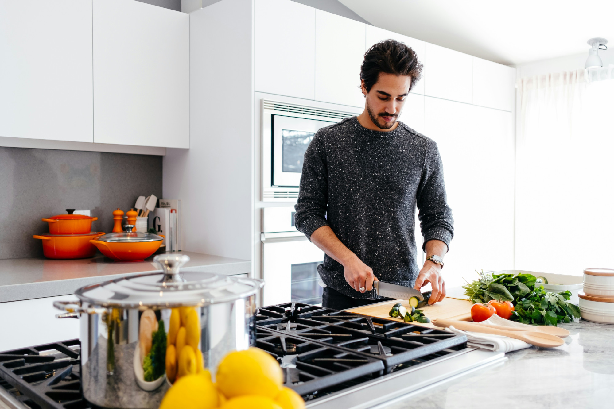

Participantes en el concurso
-

Diego Sarmiento Luna
Residente de Vejer de la Frontera, tiene una pasión desbordante por la cocina tradicional de la comarca de la Janda. Su especialidad radica en la preparación de deliciosas "tortillas de camarones", un plato emblemático de la región que ha perfeccionado con su toque personal.
-

Javier Montesinos Cruz
Amante de la buena comida de Conil de la Frontera, destaca por su habilidad para preparar exquisitos platos de pescado fresco. Su especialidad es la "lubina al horno", una receta que ha aprendido de generación en generación y que ha elevado a la perfección.
-

Catalina Ríos Soler
Entusiasta de la cocina de Barbate, encuentra su pasión en la creación de platos innovadores utilizando los productos locales más frescos. Su especialidad es el "atún encebollado al estilo de la Janda", un plato que combina la tradición con un toque contemporáneo.
-
Valeria Vargas Rojas
Nacida en Medina Sidonia, ha desarrollado una destreza única para la cocina utilizando la carne de vaca retinta. Su plato estrella son las "albóndigas de retinto en salsa de vino blanco", una receta que combina la jugosidad de la carne con los sabores intensos de la salsa, creando una experiencia culinaria inolvidable.
-
Natalia Cárdenas Flores
Oriunda de Alcalá de los Gazules, destaca por su dominio en la preparación de platos de caza típicos de la región. Su especialidad es el "venado en salsa de setas", un manjar capaz de cautivar a los paladares más exigentes de la comarca.
-

Gabriel Ochoa Mendoza
Natural de Benalup-Casas Viejas, encuentra su pasión en la elaboración de platos tradicionales con un toque creativo. Su especialidad es la elaboración del "arroz a la morisca", un plato emblemático de la cocina local que combina una exquisita mezcla de especias con ingredientes frescos y locales.